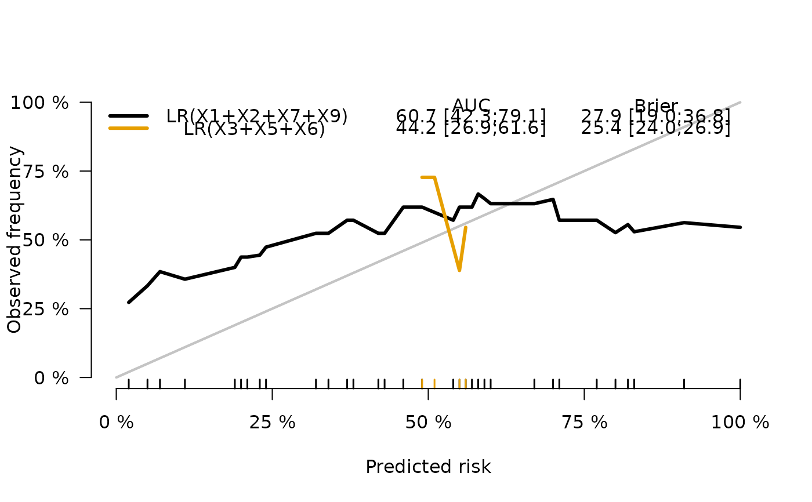

Methods to score the predictive performance of risk markers and risk prediction models
Usage
Score(object, ...)
# S3 method for list
Score(
object,
formula,
data,
metrics = c("auc", "brier"),
summary = NULL,
plots = NULL,
cause,
times,
landmarks,
use.event.times = FALSE,
null.model = TRUE,
se.fit = TRUE,
conservative = FALSE,
multi.split.test = FALSE,
conf.int = 0.95,
contrasts = TRUE,
probs = c(0, 0.25, 0.5, 0.75, 1),
cens.method = "ipcw",
cens.model = "cox",
split.method,
B,
M,
seed,
trainseeds,
parallel = c("no", "multicore", "snow", "as.registered"),
ncpus = 1,
cl = NULL,
progress.bar = 3,
errorhandling = "pass",
keep,
predictRisk.args,
debug = 0L,
...
)Arguments
- object
List of risk predictions (see details and examples).
- ...
Named list containging additional arguments that are passed on to the
predictRiskmethods corresponding to object. See examples.- formula
A formula which identifies the outcome (left hand side). E.g.,
Y ~ 1for binary andHist(time,status) ~ 1for time-to-event outcome. In right censored data, the right hand side of the formula is used to estimate the inverse probability of censoring weights (IPCW) model.- data
data.frameordata.tablein which the formula can be interpreted.- metrics
Character vector specifying which metrics to apply. Case does not matter. Choices are
"AUC"and"Brier".- summary
Character vector specifying which summary statistics to apply to the predicted risks. Choices are
"risks","IPA","riskQuantile"and"ibs". Can be allc("risks","IPA","riskQuantile","ibs")or a subset thereof."risks"adds the predicted risks to the output."ipa"computes the index of prediction accuracy (AKA R-squared) based on Brier scores for model vs null model"riskQuantile"calculates time-point specific boxplots for the predicted risks (or biomarker values) conditional on the outcome at the time-point."ibs"calculates integrated Brier scores across the time points at which the Brier score is computed. This works only with time-to-event outcome and the results depend on the argumenttimes.
Set to
NULLto avoid estimation of summary statistics.- plots
Character vector specifying for which plots to put data into the result. Currently implemented are
"ROC","Calibration"and"boxplot". In addition, one can plot AUC and Brier score as function of time as soon astimeshas at least two different values.- cause
Event of interest. Used for binary outcome
Yto specify that risks are risks of the eventY=eventand for competing risks outcome to specify the cause of interest.- times
For survival and competing risks outcome: list of prediction horizons. All times which are greater than the maximal observed time in the data set are automatically removed. Note that the object returned by the function may become huge when the prediction performance is estimated at many prediction horizons.
- landmarks
Not yet implemented.
- use.event.times
If
TRUEmerge all unique event times with the vector given by argumenttimes.- null.model
If
TRUEfit a risk prediction model which ignores the covariates and predicts the same value for all subjects. The model is fitted usingdataand the left hand side offormula. For binary outcome this is just the empirical prevalence. For (right censored) time to event outcome, the null models are equal to the Kaplan-Meier estimator (no competing risks) and the Aalen-Johansen estimator (with competing risks).- se.fit
Logical or
0or1. IfFALSEor0do not calculate standard errors.- conservative
Logical, only relevant in right censored data. If
TRUEignore variability of the estimate of the inverse probability of censoring weights when calculating standard errors for prediction performance parameters. This can potentially reduce computation time and memory usage at a usually very small expense of a slightly higher standard error.- multi.split.test
Logical or
0or1. IfFALSEor0do not calculate multi-split tests. This argument is ignored whensplit.methodis "none".- conf.int
Either logical or a numeric value between 0 and 1. In right censored data, confidence intervals are based on Blanche et al (see references). Setting
FALSEprevents the computation confidence intervals.TRUEmeans compute 95 percent confidence intervals and corresponding p-values for AUC and Brier score. If set to 0.87, the level of significance is 13 percent. So, do not set it to 0.87.- contrasts
Either logical or a list of contrasts. A list of contrasts defines which risk prediction models (markers) should be contrasted with respect to their prediction performance. If
TRUEdo all possible comparisons. For example, whenobjectis a list with two risk prediction models andnull.model=TRUEsettingTRUEis equivalent tolist(c(0,1,2),c(1,2))wherec(0,1,2)codes for the two comparisons: 1 vs 0 and 2 vs 0 (positive integers refer to elements ofobject, 0 refers to the benchmark null model which ignores the covariates). This again is equivalent to explicitly settinglist(c(0,1),c(0,2),c(1,2)). A more complex example: Supposeobjecthas 7 elements and you want to do the following 3 comparisons: 6 vs 3, 2 vs 5 and 2 vs 3, you should setcontrasts=c(6,3),c(2,5,3).- probs
Quantiles for retrospective summary statistics of the predicted risks. This affects the result of the function
boxplot.Score.- cens.method
Method for dealing with right censored data. Either
"ipcw"or"pseudo". Here IPCW refers to inverse probability of censoring weights andpseudofor jackknife pseudo values. Right now pseudo values are only used for calibration curves.- cens.model
Model for estimating inverse probability of censored weights. Implemented are the Kaplan-Meier method (
"km") and Cox regression ("cox") both applied to the censored times. If the right hand side offormuladoes not specify covariates, the Kaplan-Meier method is used even if this argument is set to"cox".- split.method
Method for cross-validation. Right now the only choice is
bootcvin which case bootstrap learning sets are drawn with our without replacement (argumentM) fromdata. The data not included in the current bootstrap learning set are used as validation set to compute the prediction performance.- B
Number of bootstrap sets for cross-validation.
- M
Size of subsamples for bootstrap cross-validation. If specified it has to be an integer smaller than the size of
data.- seed
Super seed for setting training data seeds when randomly splitting (bootstrapping) the data during cross-validation.
- trainseeds
Seeds for training models during cross-validation.
- parallel
The type of parallel operation to be used (if any). If missing, the default is
"no".- ncpus
integer: number of processes to be used in parallel operation.
- cl
An optional
parallelorsnowcluster for use ifparallel = "snow". If not supplied, a cluster on the local machine is created for the duration of theScorecall.- progress.bar
Style for
txtProgressBar. Can be 1,2,3 seehelp(txtProgressBar)or NULL to avoid the progress bar.- errorhandling
Argument passed as
.errorhandlingto foreach. Default is"pass".- keep
list of characters (not case sensitive) which determines additional output.
"residuals"provides Brier score residuals and"splitindex"provides sampling index used to split the data into training and validation sets."vcov"provides the variance-covariance matrix of the estimated parameters.- predictRisk.args
A list of argument-lists to control how risks are predicted. The names of the lists should be the S3-classes of the
object. The argument-lists are then passed on to the S3-class specific predictRisk method. For example, if your object contains one or several random forest model fitted with the function randomForestSRC::rfsrc then you can specify additional arguments for the function riskRegression::predictRisk.rfsrc which will pass these on to the function randomForestSRC::predict.rfsrc. A specific example in this case would belist(rfsrc=list(na.action="na.impute")).A more flexible approach is to write a new predictRisk S3-method. See Details.
- debug
Logical. If
TRUEindicate landmarks in progress of the program.- useEventTimes
obsolete.
- nullModel
obsolete.
- censMethod
obsolete.
- censModel
obsolete.
- splitMethod
obsolete.
Value
List with scores and assessments of contrasts, i.e.,
tests and confidence limits for performance and difference in performance (AUC and Brier),
summaries and plots. Most elements are indata.table format.
Details
The function implements a toolbox for the risk prediction modeller: all tools work for the three outcomes: (1) binary (uncensored), (2) right censored time to event without competing risks, (3) right censored time to event with competing risks
Computed are the (time-dependent) Brier score and the (time-dependent) area under the ROC curve for a list of risk prediction models either in external validation data or in the learning data using bootstrap cross-validation. The function optionally provides results for plotting (time-point specific) ROC curves, for (time-point specific) calibration curves and for (time-point specific) retrospective boxplots.
For uncensored binary outcome the Delong-Delong test is used to contrast AUC of rival models. In right censored survival data (with and without competing risks) the p-values correspond to Wald tests based on standard errors obtained with an estimate of the influence function as described in detail in the appendix of Blanche et al. (2015).
This function works with one or multiple models that predict the risk of an event R(t|X) for a subject characterized by predictors X at time t. With binary endpoints (outcome 0/1 without time component) the risk is simply R(X). In case of a survival object without competing risks the function still works with predicted event probabilities, i.e., R(t|X)=1-S(t|X) where S(t|X) is the predicted survival chance for subject X at time t.
The already existing predictRisk methods (see methods(predictRisk)) may not cover all models and methods
for predicting risks. But users can quickly extend the package as explained in detail in Mogensen et al. (2012) for
the predecessors pec::predictSurvProb and pec::predictEventProb which have been unified as
riskRegression::predictRisk.
Bootstrap Crossvalidation (see also Gerds & Schumacher 2007 and Mogensen et al. 2012)
B=10, M (not specified or M=NROW(data))
Training of each of the models in each of 10 bootstrap data sets (learning data sets).
Learning data sets are obtained by sampling NROW(data) subjects of the data set
with replacement. There are roughly .632*NROW(data) subjects in the learning data (inbag)
and .368*NROW(data) subjects not in the validation data sets (out-of-bag).
These are used to estimate the scores: AUC, Brier, etc. Reported are averages across the 10 splits.
## Bootstrap with replacement
set.seed(13)
N=17
data = data.frame(id=1:N, y=rbinom(N,1,.3),x=rnorm(N))
boot.index = sample(1:N,size=N,replace=TRUE)
boot.index
inbag = 1:N
outofbag = !inbag
learn.data = data[inbag]
val.data = data[outofbag]
riskRegression:::getSplitMethod("bootcv",B=10,N=17)$index
NOTE: the number .632 is the expected probability to draw one subject (for example subject 1) with
replacement from the data, which does not depend on the sample size:
B=10000
N=137
mean(sapply(1:B, function(b){match(1,sample(1:N,size=N,replace=TRUE),nomatch=0)}))
N=30
mean(sapply(1:B, function(b){match(1,sample(1:N,size=N,replace=TRUE),nomatch=0)}))
N=300
mean(sapply(1:B, function(b){match(1,sample(1:N,size=N,replace=TRUE),nomatch=0)}))
## Bootstrap without replacement (training size set to be 70 percent of data) B=10, M=.7
Training of each of the models in each of 10 bootstrap data sets (learning data sets).
Learning data sets are obtained by sampling round(.8*NROW(data)) subjects of the data set
without replacement. There are NROW(data)-round(.8*NROW(data)) subjects not in the learning data sets.
These are used to estimate the scores: AUC, Brier, etc. Reported are averages across the 10 splits.
set.seed(13)
N=17
data = data.frame(id=1:N, y=rbinom(N,1,.3),x=rnorm(N))
boot.index = sample(1:N,size=M,replace=FALSE)
boot.index
inbag = 1:N
outofbag = !inbag
learn.data = data[inbag]
val.data = data[outofbag]
riskRegression:::getSplitMethod("bootcv",B=10,N=17,M=.7)$index
References
Ulla B. Mogensen, Hemant Ishwaran, Thomas A. Gerds (2012). Evaluating Random Forests for Survival Analysis Using Prediction Error Curves. Journal of Statistical Software, 50(11), 1-23. URL http://www.jstatsoft.org/v50/i11/.
Paul Blanche, Cecile Proust-Lima, Lucie Loubere, Claudine Berr, Jean- Francois Dartigues, and Helene Jacqmin-Gadda. Quantifying and comparing dynamic predictive accuracy of joint models for longitudinal marker and time-to-event in presence of censoring and competing risks. Biometrics, 71 (1):102--113, 2015.
P. Blanche, J-F Dartigues, and H. Jacqmin-Gadda. Estimating and comparing time-dependent areas under receiver operating characteristic curves for censored event times with competing risks. Statistics in Medicine, 32(30):5381--5397, 2013.
E. Graf et al. (1999), Assessment and comparison of prognostic classification schemes for survival data. Statistics in Medicine, vol 18, pp= 2529--2545.
Efron, Tibshirani (1997) Journal of the American Statistical Association 92, 548--560 Improvement On Cross-Validation: The .632+ Bootstrap Method.
Gerds, Schumacher (2006), Consistent estimation of the expected Brier score in general survival models with right-censored event times. Biometrical Journal, vol 48, 1029--1040.
Thomas A. Gerds, Martin Schumacher (2007) Efron-Type Measures of Prediction Error for Survival Analysis Biometrics, 63(4), 1283--1287 doi:10.1111/j.1541-0420.2007.00832.x
Martin Schumacher, Harald Binder, and Thomas Gerds. Assessment of survival prediction models based on microarray data. Bioinformatics, 23(14):1768-74, 2007.
Mark A. van de Wiel, Johannes Berkhof, and Wessel N. van Wieringen Testing the prediction error difference between 2 predictors Biostatistics (2009) 10(3): 550-560 doi:10.1093/biostatistics/kxp011
Michael W Kattan and Thomas A Gerds. The index of prediction accuracy: an intuitive measure useful for evaluating risk prediction models. Diagnostic and Prognostic Research, 2(1):7, 2018.
Author
Thomas A Gerds tag@biostat.ku.dk and Paul Blanche paul.blanche@univ-ubs.fr
Examples
# binary outcome
library(lava)
set.seed(18)
learndat <- sampleData(48,outcome="binary")
testdat <- sampleData(40,outcome="binary")
## score logistic regression models
lr1 = glm(Y~X1+X2+X7+X9,data=learndat,family=binomial)
lr2 = glm(Y~X3+X5,data=learndat,family=binomial)
Score(list("LR(X1+X2+X7+X9)"=lr1,"LR(X3+X5)"=lr2),formula=Y~1,data=testdat)
#>
#> Metric AUC:
#>
#> Results by model:
#>
#> model AUC lower upper
#> 1: LR(X1+X2+X7+X9) 60.7 42.3 79.1
#> 2: LR(X3+X5) 44.2 26.9 61.6
#>
#> Results of model comparisons:
#>
#> model reference delta.AUC lower upper p
#> 1: LR(X3+X5) LR(X1+X2+X7+X9) -16.4 -38.2 5.3 0.1
#>
#> NOTE: Values are multiplied by 100 and given in %.
#> NOTE: The higher AUC the better.
#>
#> Metric Brier:
#>
#> Results by model:
#>
#> model Brier lower upper
#> 1: Null model 24.9 24.2 25.7
#> 2: LR(X1+X2+X7+X9) 27.9 19.0 36.8
#> 3: LR(X3+X5) 25.4 24.0 26.9
#>
#> Results of model comparisons:
#>
#> model reference delta.Brier lower upper p
#> 1: LR(X1+X2+X7+X9) Null model 3.0 -5.9 11.8 0.5124805
#> 2: LR(X3+X5) Null model 0.5 -0.4 1.4 0.2747143
#> 3: LR(X3+X5) LR(X1+X2+X7+X9) -2.5 -11.1 6.2 0.5778617
#>
#> NOTE: Values are multiplied by 100 and given in %.
#> NOTE: The lower Brier the better.
## ROC curve and calibration plot
xb=Score(list("LR(X1+X2+X7+X9)"=lr1,"LR(X3+X5+X6)"=lr2),formula=Y~1,
data=testdat,plots=c("calibration","ROC"))
if (FALSE) plotROC(xb)
plotCalibration(xb)

## compute AUC for a list of continuous markers
markers = as.list(testdat[,.(X6,X7,X8,X9,X10)])
Score(markers,formula=Y~1,data=testdat,metrics=c("auc"))
#>
#> Metric AUC:
#>
#> Results by model:
#>
#> model AUC lower upper
#> 1: X6 86.7 75.3 98.2
#> 2: X7 38.6 20.7 56.5
#> 3: X8 46.4 27.7 65.0
#> 4: X9 35.3 17.9 52.8
#> 5: X10 46.4 27.8 65.0
#>
#> Results of model comparisons:
#>
#> model reference delta.AUC lower upper p
#> 1: X7 X6 -48.1 -69.7 -26.6 1e-05
#> 2: X8 X6 -40.4 -63.6 -17.1 7e-04
#> 3: X9 X6 -51.4 -73.3 -29.4 4e-06
#> 4: X10 X6 -40.4 -61.8 -18.9 2e-04
#> 5: X8 X7 7.8 -17.0 32.6 5e-01
#> 6: X9 X7 -3.3 -26.6 20.1 8e-01
#> 7: X10 X7 7.8 -17.4 32.9 5e-01
#> 8: X9 X8 -11.0 -34.8 12.7 4e-01
#> 9: X10 X8 0.0 -27.4 27.4 1e+00
#> 10: X10 X9 11.0 -12.1 34.2 4e-01
#>
#> NOTE: Values are multiplied by 100 and given in %.
#> NOTE: The higher AUC the better.
# cross-validation
if (FALSE) {
learndat=sampleData(400,outcome="binary")
lr1a = glm(Y~X6,data=learndat,family=binomial)
lr2a = glm(Y~X7+X8+X9,data=learndat,family=binomial)
## bootstrap cross-validation
x1=Score(list("LR1"=lr1a,"LR2"=lr2a),formula=Y~1,data=learndat,split.method="bootcv",B=100)
x1
## leave-one-out and leave-pair-out bootstrap
x2=Score(list("LR1"=lr1a,"LR2"=lr2a),formula=Y~1,data=learndat,
split.method="loob",
B=100,plots="calibration")
x2
}
# survival outcome
# Score Cox regression models
if (FALSE) library(survival)
library(rms)
#> Loading required package: Hmisc
#> Loading required package: lattice
#> Loading required package: Formula
#> Loading required package: ggplot2
#>
#> Attaching package: ‘ggplot2’
#> The following object is masked from ‘package:lava’:
#>
#> vars
#>
#> Attaching package: ‘Hmisc’
#> The following objects are masked from ‘package:base’:
#>
#> format.pval, units
#> Loading required package: SparseM
#>
#> Attaching package: ‘SparseM’
#> The following object is masked from ‘package:base’:
#>
#> backsolve
#>
#> Attaching package: ‘rms’
#> The following object is masked from ‘package:modeltools’:
#>
#> Predict
library(prodlim)
set.seed(18)
trainSurv <- sampleData(100,outcome="survival")
testSurv <- sampleData(40,outcome="survival")
cox1 = coxph(Surv(time,event)~X1+X2+X7+X9,data=trainSurv, y=TRUE, x = TRUE)
cox2 = coxph(Surv(time,event)~X3+X5+X6,data=trainSurv, y=TRUE, x = TRUE)
xs=Score(list("Cox(X1+X2+X7+X9)"=cox1,"Cox(X3+X5+X6)"=cox2),
formula=Surv(time,event)~1,data=testSurv,conf.int=FALSE,times=c(5,8))
xs
#>
#> Metric AUC:
#>
#> Results by model:
#>
#> model times AUC
#> 1: Cox(X1+X2+X7+X9) 5 65.9
#> 2: Cox(X1+X2+X7+X9) 8 69.3
#> 3: Cox(X3+X5+X6) 5 74.3
#> 4: Cox(X3+X5+X6) 8 77.5
#>
#> Results of model comparisons:
#>
#> times model reference delta.AUC
#> 1: 5 Cox(X3+X5+X6) Cox(X1+X2+X7+X9) 8.4
#> 2: 8 Cox(X3+X5+X6) Cox(X1+X2+X7+X9) 8.2
#>
#> NOTE: Values are multiplied by 100 and given in %.
#> NOTE: The higher AUC the better.
#>
#> Metric Brier:
#>
#> Results by model:
#>
#> model times Brier
#> 1: Null model 5 23.2
#> 2: Null model 8 24.4
#> 3: Cox(X1+X2+X7+X9) 5 22.6
#> 4: Cox(X1+X2+X7+X9) 8 22.7
#> 5: Cox(X3+X5+X6) 5 22.0
#> 6: Cox(X3+X5+X6) 8 20.0
#>
#> Results of model comparisons:
#>
#> times model reference delta.Brier
#> 1: 5 Cox(X1+X2+X7+X9) Null model -0.6
#> 2: 5 Cox(X3+X5+X6) Null model -1.2
#> 3: 5 Cox(X3+X5+X6) Cox(X1+X2+X7+X9) -0.6
#> 4: 8 Cox(X1+X2+X7+X9) Null model -1.6
#> 5: 8 Cox(X3+X5+X6) Null model -4.4
#> 6: 8 Cox(X3+X5+X6) Cox(X1+X2+X7+X9) -2.8
#>
#> NOTE: Values are multiplied by 100 and given in %.
#> NOTE: The lower Brier the better.
# Integrated Brier score
if (FALSE) {
xs=Score(list("Cox(X1+X2+X7+X9)"=cox1,"Cox(X3+X5+X6)"=cox2),
formula=Surv(time,event)~1,data=testSurv,conf.int=FALSE,
summary="ibs",
times=sort(unique(testSurv$time)))
}
# time-dependent AUC for list of markers
if (FALSE) survmarkers = as.list(testSurv[,.(X6,X7,X8,X9,X10)])
Score(survmarkers,
formula=Surv(time,event)~1,metrics="auc",data=testSurv,
conf.int=TRUE,times=c(5,8))
#> Error in Score(survmarkers, formula = Surv(time, event) ~ 1, metrics = "auc", data = testSurv, conf.int = TRUE, times = c(5, 8)): object 'survmarkers' not found
# compare models on test data
Score(list("Cox(X1+X2+X7+X9)"=cox1,"Cox(X3+X5+X6)"=cox2),
formula=Surv(time,event)~1,data=testSurv,conf.int=TRUE,times=c(5,8))
#> Error in rowSumsCrossprodSpec(htij1, MC.Ti.cases): Not compatible with requested type: [type=NULL; target=double].
# crossvalidation models in traindata
if (FALSE) {
library(survival)
set.seed(18)
trainSurv <- sampleData(400,outcome="survival")
cox1 = coxph(Surv(time,event)~X1+X2+X7+X9,data=trainSurv, y=TRUE, x = TRUE)
cox2 = coxph(Surv(time,event)~X3+X5+X6,data=trainSurv, y=TRUE, x = TRUE)
x1 = Score(list("Cox(X1+X2+X7+X9)"=cox1,"Cox(X3+X5+X6)"=cox2),
formula=Surv(time,event)~1,data=trainSurv,conf.int=TRUE,times=c(5,8),
split.method="loob",B=100,plots="calibration")
x2= Score(list("Cox(X1+X2+X7+X9)"=cox1,"Cox(X3+X5+X6)"=cox2),
formula=Surv(time,event)~1,data=trainSurv,conf.int=TRUE,times=c(5,8),
split.method="bootcv",B=100)
}
# restrict number of comparisons
if (FALSE) {
Score(list("Cox(X1+X2+X7+X9)"=cox1,"Cox(X3+X5+X6)"=cox2),
formula=Surv(time,event)~1,data=trainSurv,contrasts=TRUE,
null.model=FALSE,conf.int=TRUE,times=c(5,8),split.method="bootcv",B=3)
# competing risks outcome
set.seed(18)
trainCR <- sampleData(40,outcome="competing.risks")
testCR <- sampleData(40,outcome="competing.risks")
library(riskRegression)
library(cmprsk)
# Cause-specific Cox regression
csc1 = CSC(Hist(time,event)~X1+X2+X7+X9,data=trainCR)
csc2 = CSC(Hist(time,event)~X3+X5+X6,data=trainCR)
# Fine-Gray regression
fgr1 = FGR(Hist(time,event)~X1+X2+X7+X9,data=trainCR,cause=1)
fgr2 = FGR(Hist(time,event)~X3+X5+X6,data=trainCR,cause=1)
Score(list("CSC(X1+X2+X7+X9)"=csc1,"CSC(X3+X5+X6)"=csc2,
"FGR(X1+X2+X7+X9)"=fgr1,"FGR(X3+X5+X6)"=fgr2),
formula=Hist(time,event)~1,data=testCR,se.fit=1L,times=c(5,8))
}
if (FALSE) {
# reproduce some results of Table IV of Blanche et al. Stat Med 2013
data(Paquid)
ResPaquid <- Score(list("DSST"=-Paquid$DSST,"MMSE"=-Paquid$MMSE),
formula=Hist(time,status)~1,
data=Paquid,
null.model = FALSE,
conf.int=TRUE,
metrics=c("auc"),
times=c(3,5,10),
plots="ROC")
ResPaquid
plotROC(ResPaquid,time=5)
}
if (FALSE) {
# parallel options
# by erikvona: Here is a generic example of using future
# and doFuture, works great with the current version:
library(riskRegression)
library(future)
library(foreach)
library(doFuture)
library(survival)
# Register all available cores for parallel operation
plan(multiprocess, workers = availableCores())
registerDoFuture()
trainSurv <- sampleData(400,outcome="survival")
cox1 = coxph(Surv(time,event)~X1+X2+X7+X9,data=trainSurv,
y=TRUE, x = TRUE)
# Bootstrapping on multiple cores
x1 = Score(list("Cox(X1+X2+X7+X9)"=cox1),
formula=Surv(time,event)~1,data=trainSurv, times=c(5,8),
parallel = "as.registered", split.method="bootcv",B=100)
}